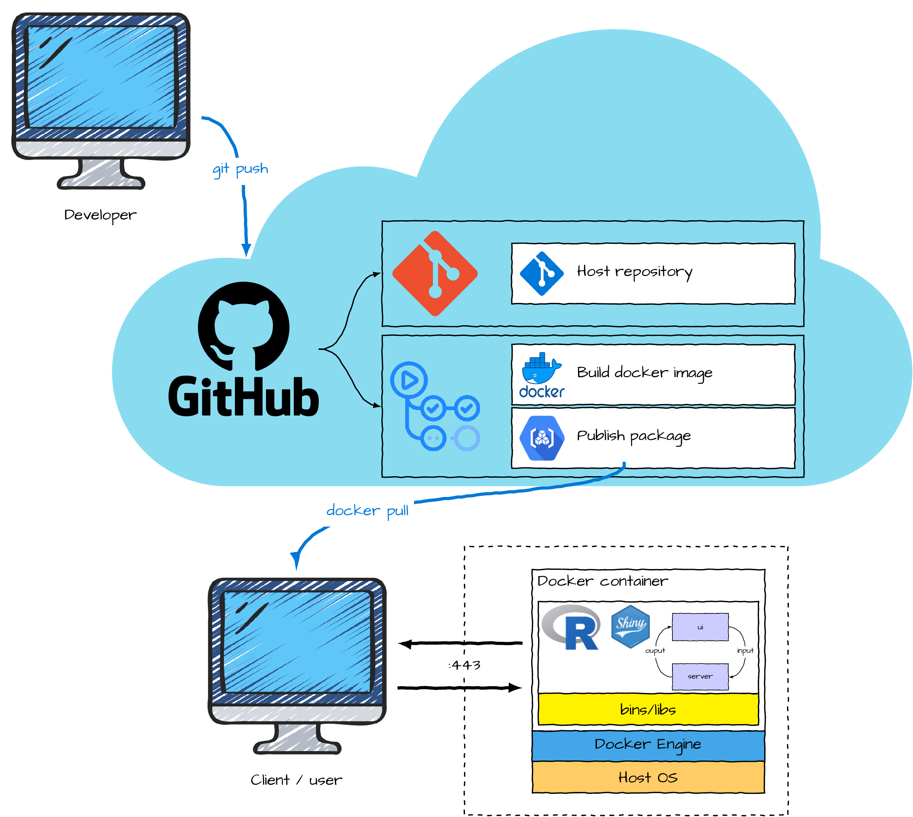
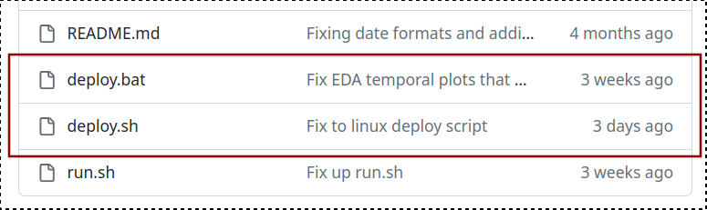
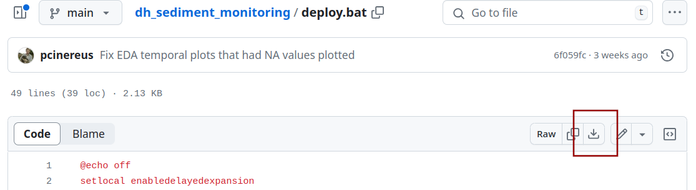

Dockerfile (instructions used to assemble a full operating environment) and github workflow file (instructions for building and packaging the docker image on github via actions).
This document comprises the manual for the Darwin Harbour sediment monitoring program analysis application. It provides information on:
R Graphical and Statistical Environment offers an ideal platform for developing and running complex statistical analyses as well as presenting the outcomes via professional graphical/tabular representations. As a completely scripted language it also offers the potential for both full transparency and reproducibility. Nevertheless, as the language, and more specifically the extension packages are community developed and maintained, the environment evolves over time. Similarly, the underlying operating systems and programs on which R and its extension packages depend (hereafter referred to as the operating environment) also change over time. Consequently, the stability and reproducibility of R codes have a tendency to change over time.
One way to attempt to future proof a codebase that must be run upon a potentially unpredictable operating environment is to containerise the operating environment, such that it is preserved to remain unchanged over time. Containers (specifically docker containers) are lightweight abstraction units that encapsulate applications and their dependencies within standardized, self-contained execution environments. Leveraging containerization technology, they package application code, runtime, libraries, and system tools into isolated units (containers) that abstract away underlying infrastructure differences, enabling consistent and predictable execution across diverse computing platforms.
Containers offer several advantages, such as efficient resource utilization, rapid deployment, and scalability. They enable developers to build, test, and deploy applications with greater speed and flexibility. Docker containers have become a fundamental building block in modern software development, enabling the development and deployment of applications in a consistent and predictable manner across various environments.
Shiny is a web application framework for R that enables the creation of interactive and data-driven web applications directly from R scripts. Developed by Rstudio, Shiny simplifies the process of turning analyses into interactive web-based tools without the need for extensive web development expertise.
What makes Shiny particularly valuable is its seamless integration with R, allowing statisticians and data scientists to build and deploy bespoke statistical applications, thereby making data visualization, exploration, and analysis accessible to a broader audience. With its interactive and user-friendly nature, Shiny serves as a powerful tool for sharing insights and engaging stakeholders in a more intuitive and visual manner.
Git, a distributed version control system, and GitHub, a web-based platform for hosting and collaborating on Git repositories, play pivotal roles in enhancing reproducibility and transparency in software development. By tracking changes in source code and providing a centralized platform for collaborative work, Git and GitHub enable developers to maintain a detailed history of code alterations. This history serves as a valuable asset for ensuring the reproducibility of software projects, allowing users to trace and replicate specific versions of the codebase.
GitHub Actions (an integrated workflow automation feature of GitHub), automates tasks such as building, testing, and deploying applications and artifacts. Notably, through workflow actions, GitHub Actions can build docker containers and act as a container registry. This integration enhances the overall transparency of software development workflows, making it easier to share, understand, and reproduce projects collaboratively.
Figure 1 provides a schematic overview of the relationship between the code produced by the developer, the Github cloud repositiory and container registry and the shiny docker container run by user.
Dockerfile (instructions used to assemble a full operating environment) and github workflow file (instructions for building and packaging the docker image on github via actions).
To retrieve and run docker containers requires the installation of Docker Desktop on Windows and MacOSx
The steps for installing Docker Desktop are:
Download the Installer: head to https://docs.docker.com/desktop/install/windows-install/ and follow the instructions for downloading the appropriate installer for your Windows version (Home or Pro).
Run the Installer: double-click the downloaded file and follow the on-screen instructions from the installation wizard. Accept the license agreement and choose your preferred installation location.
Configure Resources (Optional): Docker Desktop might suggest allocating some system resources like CPU and memory. These settings can be adjusted later, so feel free to use the defaults for now.
Start the Docker Engine: once installed, click the “Start Docker Desktop” button. You may see a notification in the taskbar - click it to confirm and allow Docker to run in the background.
Verification: open a terminal (or Powershell) and run docker --version. If all went well, you should see information about the installed Docker Engine version.
Additional Tips:
The task of installing and running the app is performed via a single deploy script (deploy.bat on Windows or deploy.sh on Linux/MacOSX/wsl). For this to work properly, the deploy script should be placed in a folder along with a folder (called input) that contains the input datasets (in excel format). This structure is illustrated below for Windows.
\
|- deploy.bat
|- input
|- dataset1.xlsx
|- dataset2.xlsxIn the above illustration, there are two example datasets (dataset1.xlsx and dataset2.xlsx). The datasets need NOT be called dataset1.xlsx. They can have any name you choose, so long as they are excel files that adhere to the structure outlined in Section 5.1.4.1.
To set up the above struture:
create a new folder on your computer in a location of your choice that you are likely to remember and easily locate (e.g. on the desktop). Whilst the name of the folder is not important, it is recommended that it be named after the project (e.g. darwin_harbour_sediment_monitoring).
download the deploy script from the projects github repository
go to the projects github repository (https://github.com/open-AIMS/dh_sediment_monitoring.git) in a browser
click on either the deploy.bat (Windows) or ’deploy.sh` (Linux/MacOSX/wsl).

click on the download button and select the project folder as the location to download the file to. If the file is automatically downloaded to a downloads folder, move the file to the project folder.

within the project folder, create a folder called inputs and place all the appropriate data sets into this inputs folder
To run the app, navigate inside of the project folder and run (typically double click) on the deploy script. Upon doing so, you will be presented with a directory selection window that is prompting for the path of the project folder. Navigate to and select the project folder before clicking the “OK” button. Shortly thereafter, the application will appear in a browser tab.
deploy.bat script
The deploy.bat script performs the following:
docker is installed and available from the command line for the current userdocker is runningdocker image and if so pull them downdocker containerThis Shiny application is designed to ingest very specifically structured excel spreadsheets containing Darwin Harbour sediment monitoring data and produce various analyses and visualisations. The application is served from a docker container to the localhost and the default web browser.
Docker containers can be thought of a computers running within other computers. More specifically, a container runs an instance of image built using a series of specific instructions that govern the entire software environment. As a result, containers run from the same image will operate (virtually) identically regardless of the host environment. Furthermore, since the build instructions can specify exact versions of all software components, containers provide a way of maximising the chances that an application will continue to run as designed into the future despite changes to operating environments and dependencies.
This shiny application comprises five pages (each accessable via the sidebar menu on the left side of the screen):
Each page will also contain instructions to help guide you through using or interpreting the information. In some cases, this will take the from of an info box (such as the current box). In other cases, it will take the form of little symbols whose content is revealed with a mouse hover.
There are numerous stages throughout the analysis pipeline that may require user review (for example examining the exploratory data analysis figures to confirm that the data are as expected). Consequently, it is necessary for the user to manually trigger each successive stage of the pipeline. The stages are:
Stage 1 - Prepare environment
More info
This stage is run automatically on startup and essentially sets up the operating environment.
Stage 2 - Obtain data
More info
This stage comprises of the following steps:
The tables within the Raw data tab of the Data page will also be populated.
Stage 3 - Process data
More info
This stage comprises of the following steps:
The tables within the Processed data tab of the Data page will also be populated.
Stage 4 - Exploratory data analysis
More info
This stage comprises of the following steps:
The exploratory data figures of the Exploratory Data Analysis page will also be populated.
Stage 5 - Temporal analyses
More info
This stage comprises of the following steps:
Underneath the sidebar menu there are a series of buttons that control progression through the analysis pipeline stages. When a button is blue (and has a play icon), it indicates that the Stage is the next Stage to be run in the pipeline. Once a stage has run, the button will turn green. Grey buttons are disabled.
Clicking on button will run that stage. Once a stage has run, the button will change to either green (success), yellow (orange) or red (failures) indicating whether errors/warnings were encountered or not. If the stage was completed successfully, the button corresponding to the next available stage will be activated.
Sidebar menu items that are in orange font are active and clicking on an active menu item will reveal an associated page. Inactive menu items are in grey font. Menu items will only become active once the appropriate run stage has been met. The following table lists the events that activate a menu item.
| Menu Item | Trigger Event |
|---|---|
| Landing | Always active |
| Dashboard | Always active |
| Data | After Stage 2 |
| Exploratory Data Analysis | After Stage 4 |
| Analysis | After Stage 5 |
| Manual | Always active |
Figure 2 provides a schematic overview the sequence of filesystem events that occur during the development, deployment and running of this app.
deploy.bat (or deploy.sh) script, it will check whether docker is running and get input from the user about the location of the project directory.port 3838 of the localhost and this will be offered to the default browser.At the completion of this stage, the Data sidebar menu and Stage 3 button will become active and the Data page will be populated with the raw data and available for review.
This task seeks to determine what data sources are available and for those found, stores the names and filetypes discovered. This task will exclusively search in the /input folder of the project directory.
This task will sequentially read in each sheet of each data source (excel file) into a nested list.
This task will ensure that all dates are of the same format. Spreadsheets often store date/time data in one format and display it in another format. Consequently, users can be unaware that they have a mixture of date/time formats present in the same spreadsheet. For the purpose of data analysis, it is important that all date/time formats are consistent - this task aims to achieve this.
This task performs data validation in accordance with the rules set out in the following section.
To be valid, input data must be excel files (*.xlsx) comprising at least the following sheets (each of which must at least have the fields listed in their respective tables):
metals
| Field | Description | Validation conditions |
|---|---|---|
| Sample_ID | unique sample ID | must contain characters |
| *¹ (mg/kg) | observed concentration of metal in sediment sample | must contain only numbers or start with a ‘<’ symbol |
1: where the ’*’ represents a one or two character chemical symbol (such as ‘Ag’ or ‘V’). There should be numerous of these fields
hydrocarbons
| Field | Description | Validation conditions |
|---|---|---|
| Sample_ID | unique sample ID | must contain characters |
| >C*¹ | observed concentration of hydrocarbons within a specific size bin in sediment sample | must contain only numbers or start with a ‘<’ symbol |
total_carbons
| Field | Description | Validation conditions |
|---|---|---|
| Sample_ID | unique sample ID | must contain characters |
| TOC (%) | observed total organic carbon (as a percentage of the sample weight) | must contain only numbers |
metadata
| Field | Description | Validation conditions |
|---|---|---|
| IBSM_site | name of the site from the perspective of IBSM | must contain characters (or be blank) |
| Site_ID | a unique site ID | must contain characters (cannot be blank) |
| Sample_ID | unique sample ID (the key to data sheets) | must contain characters (cannot be blank) |
| Original_SampleID | unique sample ID | must contain characters |
| Latitude | site latitude | must be numeric (and negative) |
| Longitude | site longitude | must be numeric |
| Acquire_date_time | date and time sample was collected (D/M/YYYY hh:mm:ss) | must be in datetime format |
| Sampler | name of person responsible for collecting sample (ignored) | ignored |
| Notes | project description (ignored) | ignored |
| Baseline_site | the unique site ID of the corresponding baseline sample | must contain characters (cannot be blank) |
| Baseline_acquire_date_site | the date and time of the corresponding baseline sample | must be in datetime format |
notes - this sheet is not processed or validated
All input data must be placed in the /input folder of the Project prior to starting the app.
This task will compile a set of spatial artifacts from GIS shapefiles of Darwin Harbour. These spatial artifacts will be used to spatially join the sediment data in order to assign spatial scales such as Zones and Areas to the data. They will also be used to facilitate mapping of the data. The shapefiles used in this task are built into the app. If there is a need to change these, please contact the app author.
This stage creates a lookup table that relates each of the spatial scales to one another. This lookup is used to inject the spatial information into the data and modelled derivatives after they are created and in so doing prevents the need to spatially join the data each time it is required.
At the completion of this stage, the Stage 4 button will become active and the Processed Data sub-page of the Data page will be populated with the processed data and available for review.
This task literally just reads in the data stored at the end of the previous stage.
This task applies rules for the presence of data that are below Limit of Reporting (LoR). In the data, LoR values are indicated by the presence of a < symbol. There are two ways available for handling LoR values.
In either case, a LoR flag is then attached to any value that was deemed LoR.
This task pivots (reshapes) the data from wide to long format. Wide format, in which each row represents a single site/time and each variable is in its own column is a convenient way to assemble data (particularly as it permits the user to easily identify missing values). However, data analysis requires that each individual record (observation) be in its own row.
This task joins (merges) the each of the main sediment data sheets (metals, hydrocarbons and total carbons) with the metadata sheet.
This task generates a unique key to uniquely identify each individual record by combining information about the Site_ID, acquire date/time and the part of the sample ID that indicates whether or not the sample was a replicate or duplicate.
This task combines all the data sources (years) and types (metals, hydrocarbons, total carbons) together into a single data set. At the same time, it also creates some additional fields:
Year_cal a field that represents the calendar year in which the sample was collectedYear_fiscal a field that represents the fiscal year in which the sample was collectedYear_water a field that represents the water year (defined as 1st Oct through to 30 Sept) in which the sample was collectedBaseline a field that represents whether the observation is considered a “Baseline” observation or notReplicate_flag a field that represents whether the observation is a replicateDuplicate_flag a field that represents whether the observation is a duplicateThis task uses the spatial artifacts created in the previous stage to add spatial information to the data. This spatial information includes the Zone, Area and Site that each observation belongs to.
This task creates a new field Site that acts as a unique identifier of a sampling location over time. This field is created by copying the IBSM_site field (if it is not empty), otherwise the Site_ID field is used. This task also removes any fields that are no longer required.
This task creates a lookup that maps sites to zones.
At the completion of this stage, the Exploratory Data Analysis menu and Stage 5 button will become active and the Exploratory Data Analysis page will be populated with the a range of exploratory figures. This Stage involves numerous tasks that each prepare the data in formats conducive to the production of the figures while navigating the Exploratory Data Analysis page.
At the completion of this stage, the Analysis menu will become active and the Analysis page will be populated with the a range of modelled outputs.
The temporal analyses essentially involve the fitting of separate Bayesian Hierarchical models (Gelman and Hill 2007) to the full time series of all sites within each focal Zone. From such models (outline below), site and zone level modelled trends can be inferred and thereafter aggregated up to Area and Whole of Harbour level trends as well.
The general form of the models employed is as follows:
\[ \begin{aligned} y_{i,s} &\sim{} \Gamma(\mu_{i,s}, \phi)\\ log(\mu_{i,s}) &= (\beta_0 + \gamma_{s[i],0}) + \sum_{j=1}^nT_{[i],j}.(\beta_j + \gamma_{s[i],j]})\\ \phi&\sim\Gamma(0.01, 0.01)\\ \beta_0&\sim{}\mathit{t}(3, \alpha_1, \alpha_2)\\ \beta_{[1,n]}&\sim{}\mathit{t}(3, 0, \alpha_3)\\ \gamma_{[1..p]}&\sim{}MVN(0, \boldsymbol{\Sigma_s})\\ \boldsymbol{\Sigma_s} &= {\begin{pmatrix} \sigma_{s_1}^2 & \rho_s \sigma_{s_1} \sigma_{s_2} & \rho_s \sigma_{s_1} \sigma_{s_3}\\ \rho_s \sigma_{s_1} \sigma_{s_2} & \sigma_{s_2}^2 & \rho_s \sigma_{s_2} \sigma_{s_3}\\ \rho_s \sigma_{s_1} \sigma_{s_3} & \rho_s \sigma_{s_2} \sigma_{s_3} & \sigma_{s_3}^2 \end{pmatrix}}\\ \sigma_{s[1,2,3]} &\sim \mathit{t}(3, 0, \alpha_2)\\ \rho_s &\sim \mathit{LKJcorr}(1)\\ \end{aligned} \]
The \(i_{th}\) value (\(y\)) from the \(s_{th}\) site was assumed to be drawn from a gamma (\(\Gamma\)) distribution parameterised by a mean (\(\mu_{i,s}\)) and dispersion (\(\phi\)) respectively. The (natural log) expected means were described by a linear model that included an intercept (\(\beta_0\)), varying effects of site (\(\gamma_{s,0}\)) and annual changes in value (\(\gamma_{s,j}\)) as well as the population effects (\(\beta_1\)) of year (\(T\)). Weakly informative flat-t (3 df) priors were applied to the intercept and all population effect parameters. The values (\(\alpha_1\), \(alpha_2\) and \(\alpha_3\)) used to define the weakly informative priors were developed from simple summary statistics of the raw data. A weakly informative gamma prior was applied to the dispersion parameter. The varying effects were assumed to follow a multivariate normal with a site-specific covariance structure whose variances follow a weakly informative flat t distribution and whose correlation follows a LJK distribution with parameter of 1.
When the data include values that are below the limit of detection, the model outlined above is modified so as to apply left censoring.
All Bayesian models were fit using the brms (Bürkner 2017) package within the R Graphical and Statistical Environment (R Core Team 2024). All models had an adaptive delta of 0.95 and had three chains, each with 5000 no-u-turn (NUTS) iterations, a warmup of 1000 and a thinning rate of 5.
Separate models are fit to each variable, for each appropriate standardisation type, for each zone. At the time of writing this manual, this equates to nearly 300 models.
This task literally just reads in the data stored at the end of the previous stage.
This task ensures that the data are formatted and packaged up into sets associated with each individual model.
This task is responsible for defining weakly informative priors on all parameters for each model. The priors associated with the model for a specific variable/zone were developed by taking simple summary statistics of the mean, median, standard deviation and median absolute deviation of the log of the values conditional on year.
This task essentially involves compiling a single simple model to use as a template for most other models. Model compilation consumes approximately 40 seconds of time prior to the model running. Since most of the models are the same (only the priors and the data differ), and this project requires the fitting of a very large number of models, the use of a pre-compiled template can speed up the overall modell fitting process dramatically.
This task involves fitting all combinations of the models. As each new model is fit, the Model Logs* pane of the Dashboard** page will be updated with a running progress (model number out of a total), zone/variable/standardisation name along with a message indicating whether the model was run or retrieved from a previous run. Each single model is expected to take approximately 1 minute to run (depending on the clock speed of the computer) so adjust your expectations accordingly.
This task will perform a range of model validation checks and assign flags against models that display sub-optimal characteristics. Similar to the model fitting task, the status of validation can be tracked in the Model Log pane of the Dashboard page. Details of the validations performed are given in section Section 6.5.2.1.
This task will extract posteriors and summaries for model derived cell means (estimates for each year) for each zone along with effects (comparisons between sets of years). With respect to the effects, the comparisons are:
The full posteriors of each of the above are stored in files to be accessed from the Analysis page.
This task collects file pointers across all models together into a single file for more convenient access in the Data page.
Similar to the Compile zone results this task extracts posteriors and summaries for model derived cell means (estimates for each year) for each site along with effects (comparisons between sets of years). With respect to the effects, the comparisons are:
The full posteriors of each of the above are stored in files to be accessed from the Analysis page.
This task collects file pointers across all models together into a single file for more convenient access in the Data page.
This task aggregates the zone level posteriors together before re-calculating the cell means and effects.
This task collects file pointers across all models together into a single file for more convenient access in the Data page.
Finally all site, zone and area results are concatenated together into a single file.
To run this tool, please adhere to the following steps:
The analysis pipeline comprises numerous Stages, each of which is made up of several more specific Tasks. The individual Tasks represent an action performed in furtherance of the analysis and of which there are reportable diagnostics. For example, once the application loads, the first Stage of the pipeline is to prepare the environment. The first Task in this Stage is to load the necessary R packages used by the codebase. Whilst technically, this action consists of numerous R calls (one for each package that needs to be loaded), the block of actions are evaluated as a set.
Initially, all upcoming tasks are reported as “pending” (). As the pipeline progresses, each Task is evaluated and a status is returned as either “success” () or “failure” ().
The Stage that is currently (or most recently) being run will be expanded, whereas all other Stages will be collapsed (unless they contain errors). It is also possible to expand/collapse a Stage by double clicking on its title (or the small arrow symbol at the left side of the tree).
As the pipeline progresses, Task logs are written to a log file and echoed to the Logs panel. Each row represents the returned status of a specific Task and are formatted as:
SUCCESS the task succeededFAILURE the task failed and should be investigatedWARNING the task contained a warning - typically these can be ignored as they are usually passed on from underlying routines and are more targetted to developers than users.The Logs in the Log panel are presented in chronological order and will autoscroll such that the most recent log is at the bottom of the display. If the number of Log lines exceeds 10, a scroll bar will appear on the right side of the panel to help reviewing earlier Logs.
The Progress panel also has a tab (called Terminal-like) which provides an alternative representation of the status and progress of the pipeline.
Under the Logs panel, there is a Model Logs panel. This panel provides additional status and progress about the fitting and processing of individual statistical models.
The Data page comprises two panels or subpages accessable by tabs named “Raw data” and “Processed data” at the top of the page.
The contents of the Processed data subpage will not be revealed until the completion of Stage 3.
The Raw data panel displays the input data and associated validation summaries (once the data have been loaded - that is, once Stage 2 has been complete). The table above initially has a row for each of the input files.
The title of each input file name is displayed in the first column (File). The size and file creation time in the next two columns (fields). The Sheet field lists the parsed sheets within the excel file and the Status column indicates whether all the sheets are valid () or not ().
To the left of the file name there is a black triangle. This is an content expansion marker. When the triangle points to the right, clicking anywhere in the cell containing the triangle will expand the table to reveal additional rows (one for each of the sheets in that excel file). The rows can be collapsed again by clicking on the cell containing the downward pointing triangle.
When the additional rows are visible, the Status field icons indicate whether the sheet was valid () or not ().
Clicking on the cell containing the name for a Sheet will make this the focal Sheet of the Data and Validation tabs:
the table in the Data tab displays the focal content of the input data Sheet. Only the first 10 rows are displayed in the table, the others being accessable via the controls under the table.
Note, all numerical values are displayed only to three decimal places, yet the actual underlying data is full resolution.
the table in the Validation tab displays more details about which fields or rows of the focal Sheet failed validation tests.
If there were no validation issues, this table will be empty. Otherwise, the description field will indicate the nature of the violation and in the case of issues with an individual record, the offending row will be presented across the remaining cells in the row. For more information about the validation tests, please refer to the Data requirements box (to the right of this box in the app).
Underneath both the Data and Validation tables, there is a Download as csv button. Via this button, you can download a comma separated text file version of the data in the table for further review in a spreadsheet of your choice. Once you click this button, you will be prompted to navigate to a suitable location to store the file.
The Processed data panel displays the first 10 rows of the complete, compiled and processed data set. Descriptions of each field of these data are provided in the table below.
This panel will not become active until the completion of Stage 3.
The Processed data panel displays the processed data. As part of the processing, the following new fields will be created:
| Field | Description |
|---|---|
| Sample_key | this is a unique ID for each sample and is created as the combination of Sample_ID, Acquired_date_time and any replicate/duplicate tokens in the Sample_ID |
| *¹ (mg/kg) | observed concentration of metal in sediment sample |
| Type | whether the record pertains to a metal or hydrocarbon |
| Year_cal | calendar year of sample collection |
| Year_fiscal | financial year of sample collection |
| Year_water | water year (1st Oct - 30 Sept) of sample collection |
| Year | calendar year of sample collection |
| Baseline | whether the record is a baseline record (TRUE) or not (FALSE) |
| ZoneName | name of the Darwin Harbour Zone |
| Region | Darwin Harbour Region number |
| RegionName | name of the Darwin Harbour Region |
| Zone | Darwin Harbour Zone number |
| Area | Darwin Harbour Area (Inner or Outer) |
| Site | ID of the sampling site |
| Var | name of the measurement |
| Values | the observed measurement |
| Value_type | whether the value is a standardised value or not |
| Fe/Al | Fe:Al where appropriate |
| Fe_Al_normalisation | what the sample would be normalised against Fe or Al (or not applicable) if it could be normalised |
| Normalised against | what the sample was normalised against (if it was normalised) |
| Normalisation flag | whether the normalisation has switched between Fe and Al over time for this site |
Under the column (field) headings in the Processed data panel table, there are input boxes that act as filters. The data presented in the table will be refined to just those cases that match the input string as it is being typed. It is possible to engage with any or all of these filters to help refine the search.
Under the table there is a Download as csv button. Via this button, you can download a comma separated text file version of the data in the table for further review in a spreadsheet of your choice. Once you click this button, you will be prompted to navigate to a suitable location to store the file.
The Exploratory Data Analysis page comprises four panels or subpages accessable by tabs at the top of the page and named “Temporal”, “Temporal Type”, “Temporal Site” and “Spatial Type”.
This page displays a multi-panel figure depicting the temporal sampling design of the data within each of the Harbour Zones. The y-axis (rows) of the figure represents the Sampling sites (based on the Site names they were first assigned). Blue points represent the samples collected that are considered to be “Baseline” or “Reference” samples from which subsequent samples at the corresponding site are to be gauged (compared). Red points represent non-“Baseline” samples. Points are jointed by lines to help identify discontinued sampling (where no line exists) and where no Baselines have been defined (when the left point of a sequence is red).
To keep the figure to a manageable size and degree of clutter, the figure fucusses only on “Sites” that were first monitored in the semester indicated by the dark blue selector to the left side of the figure. The selectors are partitioned into 6 monthly (a semester) chunks and clicking on a different selector will update the figure to a different fraction of the data.
The multi-panel figure displayed on this page partitions the data into Zone/Measurement types (via left hand selectors) and figure columns (measures). The x-axis (rows) of the figure represents the sampling years and the y-axis represents the individual sampling sites. Blue points represent the samples collected that are considered to be “Baseline” or “Reference” samples from which subsequent samples at the corresponding site are to be gauged (compared). Red points represent non-“Baseline” samples.
This page provides a way of fully exploring the un-modelled temporal trends in both raw and standardised data for each Site, Measurement Type and Variable.
Blue points represent the samples collected that are considered “Baseline” or “Reference” samples from which subsequent samples at the corresponding site are gauged. Red points represent non-“Baseline” samples. Multiple panels (if present) distinguish standardised and unstandardised data. Hovering over the points will reveal some of the pertinent underlying data associated with the point.
Different combinations of Sites, Measurement Type and Variables can be selected via their respective dropdown boxed in the panel above the figures.
This page provides a way to visualise the spatial distribution of un-modelled data on a map. It also provides a representation of the temporal trends in the data. The subset of data presented in the temporal graph and on the map are controlled by a set of dropdown selector boxes. The data presented on the map are also further refined to a single year and that is controlled by the slider situated above the temporal figure.
In the temporal figure, each point represents an individual observation and observations collected from the same sites over time are connected by gray lines. Blue points represent the samples collected that are considered “Baseline” or “Reference” samples from which subsequent samples at the corresponding site are gauged. Red points represent non-“Baseline” samples. Multiple panels (if present) distinguish standardised and unstandardised data. Hovering over the points will reveal some of the pertinent underlying data associated with the point.
Sites are represented on the map by circular points, the colour of which are mapped to a scale proportional to the data values. Panning and zooming of the map is done via the mouse (moving while left mouse press: panning, scrolling of mouse button: zooming). The Zone selector dropdown controls which Harbour Zone(s) are highlighted and populated with data.
The Analysis page comprises three panels or subpages accessable by tabs at the top of the page and named “Analysis overview”, “Model diagnostics” and “Analysis details”.
The main feature of this panel is a table representing a very high level overview of the results conditional on spatial scale (Site, Zone, Area), Measurement Type (hydrocarbons or metals), Value Type (Unstandardised or Standardised), Normalisation (Standardisation) method, Focal Year and Contrast (each of which is controlled via a dropdown).
The table presents a matrix in which:
the columns represent the variables
the rows represent the sites/zones/areas
the colour of the cells represents the polarity and evidence of change:
models built on data that includes values below limit of reporting/detection are marked with a black flag ()
The selectors can be used to filter what subset of data are presented in the table:
At the top of this page there is a collapsed box containing an overview of the model validation checks. To view the table, ensure that the box is expanded (click on the “-” icon in the upper right corner of the box banner).
The table is filterable (by entering text in the text boxes between the column headings and first row of data). Each row represents the inforation about a single model. The validity tests represent whether there is any evidence to reject (p-value < 0.05). A value of “fail” indicates that there is evidence that the test revealed evidence to invalidate the assumption:
The table is initially sorted such models flagged as potentially invalid are towards the top.
The page also displays diagnostics and summaries of each of the fitted models accessible via hierarchical tabs and selectable via Zone, Variable and Standardisation selection boxes.
More information about each of the validation and summarisations are provided inside the corresponding set of tabs.
This panel displays a wide range of MCMC sampling and model validation diagnostics as well as simple model summaries.
Plots of priors (black points and whiskers) and posteriors (coloured points and whiskers) for each of the main model parameters. This sort of figure provides a way to visualy assess how informative the priors are likely to be in determining the posteriors. Ideally, we want the priors to only be weakly informative. That is, we only want them to have a regularising influence (encouraging the sampler to stay within a range of parameter estimates that are vaguely plausible). Hence, the ideal is for the priors (black) to be either substantially wider (longer in the figure) or centered at a different location (position along y-axis) than the corresponding posteriors (coloured).
MCMC traceplots are visual tools used to assess the convergence and mixing behavior of Markov Chain Monte Carlo (MCMC) algorithms in Bayesian statistics. They offer valuable insights into the efficiency and reliability of your MCMC analysis.
What do they show?
Each trace plot displays the values of a specific parameter estimated by the MCMC algorithm across all iterations. Multiple parameters can be plotted individually or jointly to compare their behavior.
How to interpret them:
Convergence:
A well-converged chain should exhibit stability over iterations, meaning the trace plot plateaus around a constant value or fluctuates within a predictable range. Trends or drifts indicate the chain hasn’t converged, and the estimates might be biased.
Mixing:
Good mixing implies the chain explores the parameter space efficiently, visiting different possible values frequently. Stuck chains remain in specific regions, leading to poor exploration and unreliable estimates.
Autocorrelation:
If consecutive values in the trace plot are highly correlated, the chain mixes slowly, impacting efficiency.
Mixing across chains:
Running multiple chains (starting from different points) should converge to similar values, supporting mixing and reliability.
Interpretation tips:
MCMC autocorrelation plots, are another essential tool for diagnosing the convergence and mixing of your MCMC algorithm in Bayesian statistics.
What are they?
Autocorrelation plots measure the correlation between values of a parameter at different lags (distances) within the MCMC chain. They typically display the correlation coefficient at each lag, plotted against the lag number. The first bar represents the correlation of MCMC samples with themselves, and thus will always be 1 on the y-axis.
How to interpret them:
Bias:
The autocorrelation plot helps assess how quickly the correlation between samples decays as the lag increases. Ideally, samples collected from any process (including MCMC sampling) should all be independent and unbiased in order to provide unbiased estimates. If the autocorrelation values decay rapidly to zero as the lag increases, it indicates that the MCMC samples are likely to be independent and unbiased. Conversely, if high autocorrelation persists with large lags, it is possible that the MCMC samples are biased towards particular regions of the parameter space. **Ideally, the degree of autocorrelation should drop to below 0.25 by the second bar (second lag).
Convergence:
Rapidly decaying autocorrelation: As the lag increases, the correlation between values drops quickly, indicating good convergence. The chain efficiently moves through the parameter space, providing reliable and unbiased estimates.
High autocorrelation even at large lags: This suggests the chain is “stuck” in certain regions, not exploring the parameter space well. Estimates might be biased and unreliable.
Mixing:
High autocorrelation at small lags: The chain takes many iterations to “forget” past values, indicating slow mixing. The algorithm might not be efficiently exploring the parameter space.
Autocorrelation dropping to zero around medium lags: This suggests the chain mixes reasonably well, considering the natural dependence between consecutive values.
If autocorrelation patterns exist in the MCMC samples, the MCMC samples should be thinned to a higher degree.
Rhat plots, also known as Gelman-Rubin convergence diagnostic plots, are graphical tools used to assess the convergence of multiple chains in a Bayesian analysis. These plots are based on the Gelman-Rubin statistic (Rhat), which compares the variance within chains to the variance between chains.
What are they?
Rhat represents a “potential scale reduction factor”, and compares the within-chain and between-chain variances of parameter estimates from multiple MCMC chains. It’s used to assess whether the chains have mixed well and converged to the same target distribution.
Rhat plots visualise the Rhat statistic for each parameter estimated in the Bayesian analysis. Each parameter has its own Rhat value, and the plot typically displayed as histograms.
How to interpret them:
Rhat < 1.01:
Generally indicates very good convergence, suggesting the chains have explored the target distribution efficiently and reached similar conclusions.
Rhat < 1.05:
Generally indicates acceptable convergence.
Rhat > 1.05:
Indicates significant convergence problems, meaning the chains haven’t mixed well and could lead to biased estimates. It implies that at least one of the chains may have traversed different features of the parameter space compared to the other chain(s). If so, then there may well be other additional un-traversed features. It is possible that the MCMC sampler may not have fully explored all important regions of the parameter space.
ESS plots, or Effective Sample Size plots, are graphical tools used to assess the effective sample size of MCMC samples obtained from Bayesian analyses. The effective sample size quantifies the amount of independent information contained in the MCMC samples and is crucial for accurate estimation of posterior quantities.
How do they work?
Imagine your MCMC chain has length \(n\), but due to autocorrelation, not all \(n\) iterations provide truly independent information. ESS attempts to quantify this by estimating the number of independent samples equivalent to your chain, effectively capturing the information content.
How to interpret them:
High ESS (closer to \(n\)):
This indicates good efficiency, meaning your chain efficiently explores the parameter space and provides reliable estimates.
Low ESS (much smaller than \(n\)):
Suggests poor efficiency, with high autocorrelation reducing the effective number of independent samples. This can lead to wider credible intervals and less precise estimates.
In order to have enough MCMC samples to provide meaningful summaries, each parameter should have at least 1000 effective samples.
The ESS values are often expressed as fractions of the total \(n\) and represented graphically as a histogram. Ideally, most (if not all) the ESS values should be above 0.5.
If there are low ESS, it suggests that either the total number of iterations was not large enough or the sampler was not sampling efficiently. For the former case, the sampler should be re-run with additional iterations. In the later case, it is likely that the model itself (or the priors) are mis-specified and this should be addressed before rerunning the model.
Posterior probability density overlay plots display the density distribution of the observed data (dark line) overlayed upon the density distributions of a large number of posterior predictions (fainter blue lines).
The general idea is that if a model is to be useful, it should be able to generate observations (predictions) that approximate the data used to train the model in the first place. If this is not the case, then it is likely that the model does not adequately capture the pertinent properties of the observed data.
Ideally, the densities of the numerous realisations from the posteriors should match closely the density of the original observed data. The manner by which the densities differ from that of the original data can be used to infer what aspects of the data the model is under or over estimating and adjustments can be made to the model accordingly.
Since statistical models are low dimensional representations of a system the reliability of a statistical model will depend on the degree to which certain assumptions are met. Many of these assumptions can be explored by examination of the model residuals.
Patterns in residuals suggest either issues of dependencies (biases), poor model structure and a general lack of model fit. However, for many statistical models, discerning genuinely violation-indicating patterns in residuals from artifacts due to the model type can be really difficult - if not impossible.
Within R, the DHARMa (Diagnostics for HierArchical Regression Models: Hartig (2022)) package generates standardised residuals via simulation and uses these as the basis of a range of tools to diagnose common modelling issues including outliers, heterogeneity, over-dispersion, autocorrelation.
New observations simulated from the fitted model are used to calculate a cumulative density function (CDF) that describes the probability profile of each observation. Thereafter, the residual of an observation is calculated as the value of the CDF that corresponds to the actual observed value:
This approach ensures that all residuals have the same interpretation irrespective of the model and distribution selected.
DHARMa supports a variety of diagnostic plots based on the simulated residuals, including residual plots, QQ plots, and test-based diagnostic plots. These plots allow for visual inspection of model adequacy and can reveal patterns or deviations indicative of model misspecification or violation of assumptions. The most common plots and their interpretations are:
a Q-Q plot
Ideally all points should be close to the diagonal red line. Overlayed onto this plot are three additional tests.
a Residual vs Predicted plot
Ideally, there should be no patterns in the residuals. To help identify any patterns, quantile trends are overlayed. Ideally, there should be a flat black line at each of the quantiles of 0.25, 0.5 and 0.75. In some circumstances, quantiles cannot be computed and in such cases a single dashed smoother many be placed over the data cloud.
a Dispersion plot
The observed model dispersion is overlayed (red line) upon the distribution (black) of simulated dispersion values. Ideally the red line should be in the middle of the simulated distribution.
Note, the individual tests that accompany the diagnostic plots tend to be stricter than the assumptions we are seeking to explore. That is, statistical models tend to be reasonably robust to mild assumption violations, yet the diagnostic tests are fairly strict. Hence, the tests are used to flag potential issues, yet the ownace is still on the researchers to explore these violations in greater detail and evaluate whether they are likely to have any important consequences.
The coefficients (parameter estimates) table displays each of the main model parameter estimates on the scale of the link function. Parameters that start with b_ are the population-level (fixed) effects. Parameters that start with sd_ are the varying (random) effects.
The table lists the posterior median as well as lower and upper bounds of the 95% Highest Posterior Density (HPD) interval for each parameter. Also tabulated are the total number of posterior draws (length), Rhat values (rhat), and effective sample size in both the bulk of the posterior (ess_bulk) and tail of the posterior (ess_tail).
This panel has two sub-panels for displaying “Modelled trends” and “Modelled effects”.
The modelled (predicted) values of a focal variable are displayed in tabular and graphical form.
In the table, each row represents the summaries of predictions for a specific year. The summaries are in the form of median as well as lower and upper 95% highest probability density (HPD) intervals of the full model posteriors. Years in which data included values below the limit of reporting are marked by a black flag (). The table also indicates which years are considered Baseline.
These same summaries are also presented graphically in the figure. Additionally, the figure displays the underlying un-modelled data in gray. Individual sites are connected by gray lines.
This table summarises the comparisons between the average of the baseline year(s) and each of the subsequent reporting years. Values are reported on a fold (fractional) scale. On this scale, a value of 1 indicates no change. Values of 0.5 and 2 would indicate that the value in the reporting year is respectively half and twice that of the baseline year(s).
Posteriors of the comparisons are summarised by their medians as well as the lower and upper bounds of the 95% Highest Posterior Density (HPD) interval. Also tabulated are the exceedence probabilities associated with the probability that the values have declined since the baseline year(s) (Pl) and the probabilities that they have increased (Pg). These probabilities must sum to 1 and it is only necessary to explore the larger value per comparison. As a guide exeedence probabilities:
Finally, there is also a column that represents the polarity and evidence of change via a color.
The full modelled posteriors are depicted in the figure under the table. The y-axis represents each of the contrasts (comparisons between sets of years or years and the Baseline). The posterior distributions are coloured according to the polarity and degree of evidence as outlined above.
The full and summarised posteriors can be presented on either a percentage scale (default) or fold scale and this is controlled via a dropdown box above the table.